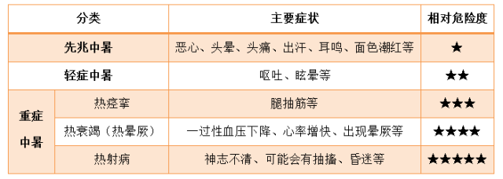
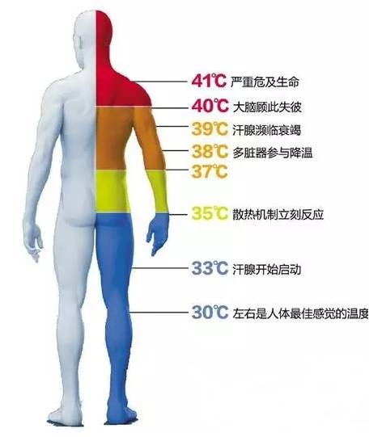

夏季施工，谨防中暑！
夏季施工人员劳动强度大，易出现过度疲劳、中暑现象，从而引发安全事故。一般来讲，外界温度超过37℃对于肌体就会产生危险。中暑患者的体温越高，生命危险就会越大。一旦对中暑的应对不当，人体核心体温超过40℃中暑病死率高达41.7%，若是体温超过42℃，病死率高达81.3%**。但是并不是所有的中暑情况都会产生致命危险，只有在热射病的情况下，才容易造成死亡**。
从临床表现来看，根据中暑的轻重程度，可以分为三大类：

从职业特点来看，在高温、高湿没有通风的环境下长时间滞留都是中暑的高危行业。那么，中暑了怎么办？如何预防中暑？
先兆中暑
症状：在高温环境下，出现头痛、头晕、口渴、多汗、四肢无力发酸、注意力不集中、动作不协调等，体温正常或略有升高。
解决办法：及时转移到阴凉通风处，降温，补充水和盐分，短时间内即可恢复。
轻症中暑
症状：除上述症状外，体温往往在 38℃以上，伴有面色潮红、大量出汗、皮肤灼热，或出现四肢湿冷、面色苍白、血压下降、脉搏增快等表现。
解决办法：及时转移到阴凉通风处，平躺解衣，降温，补充水和盐分，可于数小时内恢复。
普通中暑通用办法：
将患者扶到阴凉处躺下；
补充水分和电解质，最好是淡盐水；
用湿毛巾、冰袋、冰块、风扇降温；
把患者脚部抬高，有助于静脉回流，缓解休克状态。
如情况严重，将患者送至医院，医生会采取更专业的综合与对症治疗措施，处理并发症，防止脑水肿和抽搐等特殊情况。
重症中暑
重症中暑又分为热痉挛、热衰竭和热射病。
热痉挛
常发生于初次进入高温环境工作，或运动量过大时，大量出汗且仅补水者。
症状：常表现为训练中或训练后出现短暂性、间歇发作的肌肉抽动。
解决办法：迅速转移到阴凉通风处平卧，补充盐水或饮用电解质溶液可迅速缓解热痉挛症状。轻症者可口服补液盐，脱水者应静脉输注生理盐水，并做好积极转运准备。
热衰竭
症状：常表现为多汗、疲劳、乏力、眩晕、头痛、判断力下降、恶心和呕吐，有时可表现出肌肉痉挛、体位性眩晕和晕厥。
解决办法：热衰竭如得不到及时诊治，可发展为热射病，所以应立即送往医院救治。
热射病
症状：也是最严重的一种，典型的临床表现为高热、无汗、昏迷。
热射病之所以危险，是因为人体器官都需要在一定正常温度下才能正常运作，这和各个酶的生物活性及机体代谢有关，而一旦器官损伤造成了，并不是总是可逆，当出现多器官功能衰竭时，死亡率极高就不难理解了。

解决办法：
一旦发现身边的人出现了“热射病”的症状，要及时采取措施进行急救，首先要做的就是迅速降温。
将患者移至阴凉通风处，有条件的话移到空调房间。在腋窝、头部、腹股沟大动脉明显处放置冰袋或用30%~40%酒精涂擦，同时用电扇或扇子等吹风以快速散热。
如果患者意识清醒，可让其饮用些淡盐水。已经昏迷者不要强行喂水，以免引起气道梗阻或呕吐窒息。
出现心跳骤停时，要立即做心肺复苏。同时联系120，转运到有血液净化治疗条件的重症医学科进行治疗，通常要在2个小时内把患者体温从40℃以上降低到38.5℃以下。
热射病虽然不多见，但大家也不能掉以轻心，如果温度超过35度，最好不要长时间在室外活动，以免中暑。
紧急救助注意事项：
运动饮料、绿豆汤均可以选择，但冰镇饮料虽可以降温，但要注意两点：一是对糖尿病人会造成血糖升高，二是对胃肠道疾病患者会造成肠胃不适。
冰袋放置的地方要在颈部两侧、大腿根或腋下，这些地方血管丰富，降温效果好。
藿香正气水或十滴水都可以起到解暑作用，但要考虑病人是否能够耐受。神志不清的患者可能不具备服药条件；儿童、孕妇则需遵医嘱；驾驶员和高空作业人员要考虑酒精因素；同时服用头孢类抗生素的患者不能同时服用藿香正气水。
极端情况下，在保证安全的基础上，可使用冲凉水澡、用矿泉水浇头、冷水浸泡等极端方式迅速降温。
防暑降温工作， 应根据生产的实际情况，积极采取行之有效的防暑降温措施，要保证充足降温茶水、食品、药品供应，通风降温设施有效运行；注意劳逸结合，调整作息时间，严格控制加班加点；入暑前，抓紧做好高温、高空作业工人的体检，对不适合高温、高空作业的适当调换工作。
在饮食上，注意营养，多准备些蔬菜、水果等维生素含量较高的食品，多煮绿豆汤，多用莲子、薄荷、荷叶与粳米、冰糖等煮粥不仅香甜爽口，还是极好的清热解暑良药，可以有效地防暑降温。
原文编辑: EHS资讯
原文链接: https://ehsinfo.cn/2020/06/10/防暑降温.html
版权声明: 转载请注明出处(必须保留作者署名及链接)